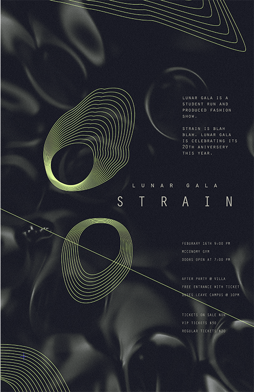
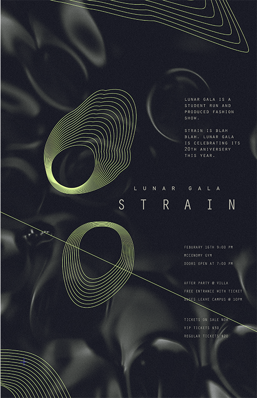

strain is the branding for lunar gala
lunar gala is an annual student produced and run fashion show at carnegie mellon university featuring student made designs, models, and production. with three other designers, i defined the branding and print materials for the show. the brand was then expanded on by a team of web and motion designers.
lunar gala was orginally a celebration of chinese new year and its zodiac, and while it has drifted from its origins, each year's theme and title are still guided by the zodiac. 2016 was the year of the monkey as well as lunar gala's 20th year anniversery; with these two events in mind, we reflected on the evolution of lunar gala and titled the show "strain."
strain is the evolution, the fight to survive induced by external forces of pressure, tension, and constriction. in the past twenty years, lunar gala has strained to evolve beyond the usual and expected.
select pages from show program
video thumbnails
<< back 
